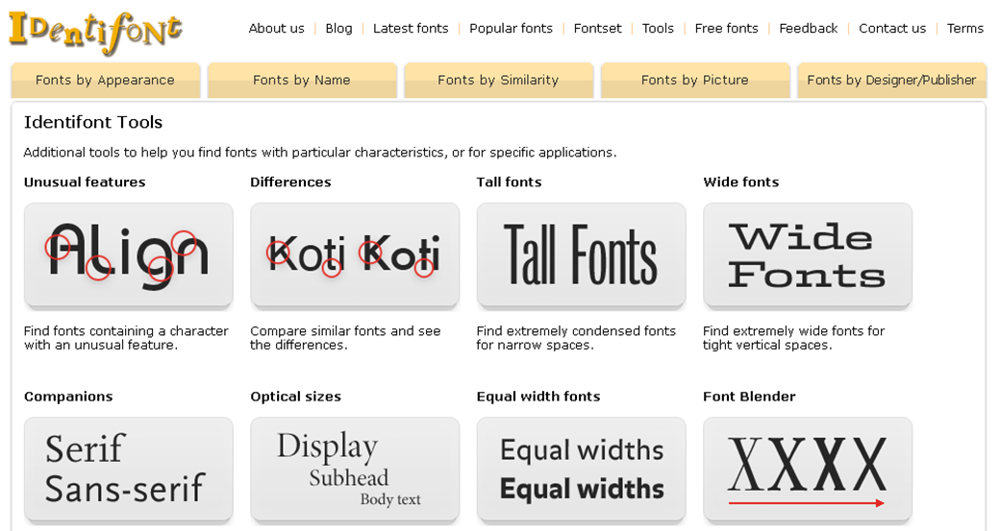

Иногда попадаешь на какой-то сайт и влюбляешься в дизайн с первого взгляда. Хорошие картинки, отличные текста, удачная цветовая схема, а главное – классные шрифты, которые так и хочется “одолжить” для собственных проектов. Но вот незадача-то, как понять что это за шрифт? Ведь на поиск визуально подобной типографии могут уйти часы. Я не раз попадал в подобные ситуации, и поэтому решил создать небольшую подборку бесплатных онлайн инструментов, которые помогают осуществлять поиск шрифта по картинке. Каждый из них имеет свои особенности и преимущества, так что давайте подберем то, что пригодится именно вам.
Итак, вам понравился шрифт. Узнать, что это за шрифт можно несколькими основными способами. Первый, наиболее традиционный, это конечно же спросить у разработчика дизайна, каким шрифтом он пользовался. Но само собой это создает ряд дополнительных действий, и далеко не факт, что этот человек с большим удовольствием сразу же раскрое все карты.
Второй, более рациональный метод, это использовать фотошоп, в котором есть функция поиск шрифта по картинке в разделе шрифтов. Преимущество этого метода в том, что этот шрифт может уже присутствовать среди скачанных или стандартных шрифтов. Но, увы и ах фотошоп есть не у всех пользователей, множество людей просто хотят использовать его в удобном текстовом редакторе. Именно поэтому третий вариант является наиболее выигрышным для любых пользователей.
Третий вариант – это поиск шрифта по картинке с помощью специальных сайтов, позволяющих определить шрифт путем загрузки изображения и его анализа. Поскольку таких онлайн инструментов на сегодняшний день масса, мы подобрали несколько бесплатных и удобных инструментов, позволяющих осуществить распознавание шрифта. Именно о них пойдет речь далее.
WhatTheFont, разработанный одним из крупнейших поставщиков шрифтов, является специалистом по распознаванию шрифтов номер один. Вот как это работает: вы загружаете изображение, а онлайн инструмент находит самый похожий шрифт в базе данных. Это самый простой и быстрый способ определить шрифт онлайн.
Matcherator это идеальный инструмент для распознавания шрифтов с точки зрения простоты использования. Более того, на сайте есть удобная функция drag and drop. Это значит, что вы можете поместить изображение шрифта, просто перетащив картинку на сайт с помощью мышки, а затем программа запустится и найдет то, что нужно! С помощью этого инструмента вы сможете распознать всевозможные шрифты (с засечками и без), и все это бесплатно.
С инструментом Identifont распознавание шрифтов выглядит несколько иначе. Вы можете распознавать все типы шрифтов, но сначала вам нужно ответить на ряд вопросов о наиболее важных для вас элементах шрифты (высота, изгибы, засечки).
В левой колонке на каждом этапе отображается список вопросов, на которые вы уже ответили. Вы всегда можете нажать на вопрос, чтобы проверить параметры и, возможно, изменить свой ответ. Если вы не уверены, вы можете нажать «Не уверен», чтобы пропустить этот вопрос. Таким образом, поиск шрифта по картинке может быть довольно забавным!
Этот инструмент-расширение можно прикрепить в меню браузера, и это довольно удобно, если вы дизайнер и часто занимаетесь работой со шрифтами. Fount не только бесплатно покажет вам, какой шрифт использовался, но и укажет его ключевые характеристики. Он также определяет размер шрифта, вес и стиль. Неплохо для бесплатного онлайн инструмента, не так ли?
Иногда лучший способ найти правильный шрифт – это поискать красивые примеры и подборки шрифтов в интернете. А если уж какая-то картинка с надписью никак не выходит у вас из головы – то просто воспользуйтесь онлайн инструментами и выудите заветный шрифт.